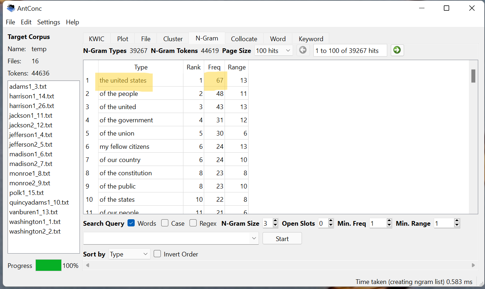
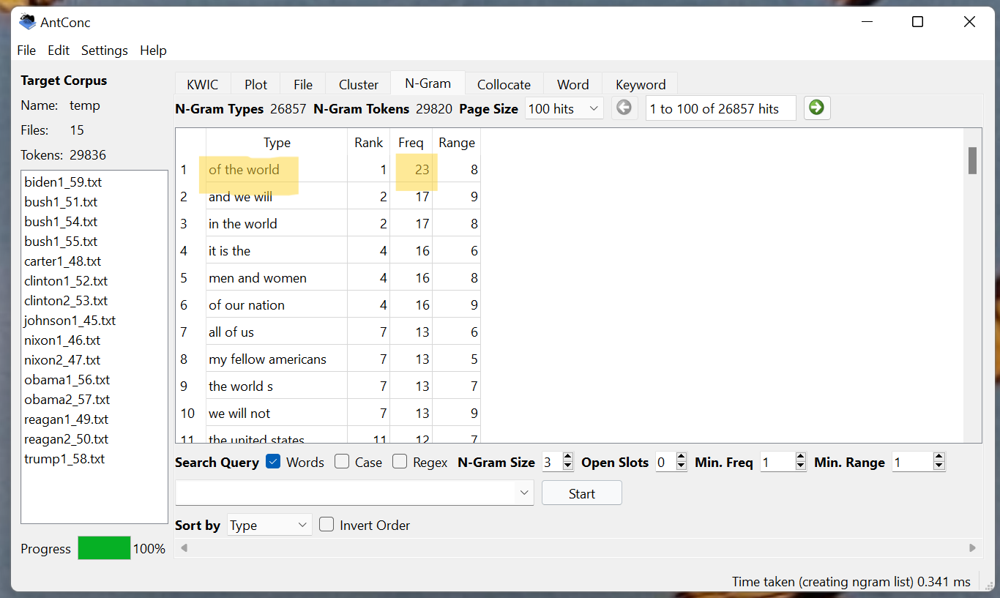
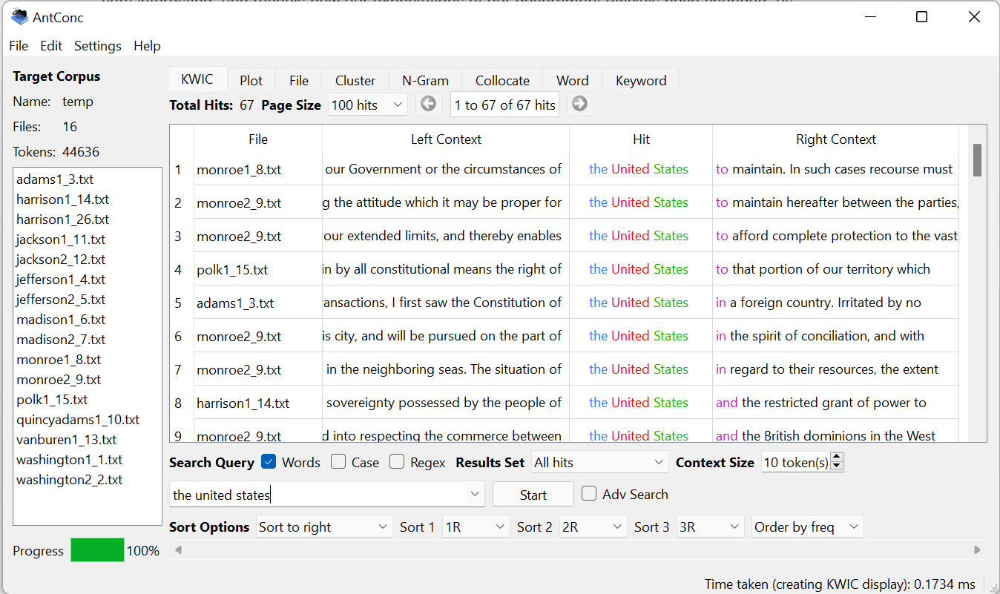
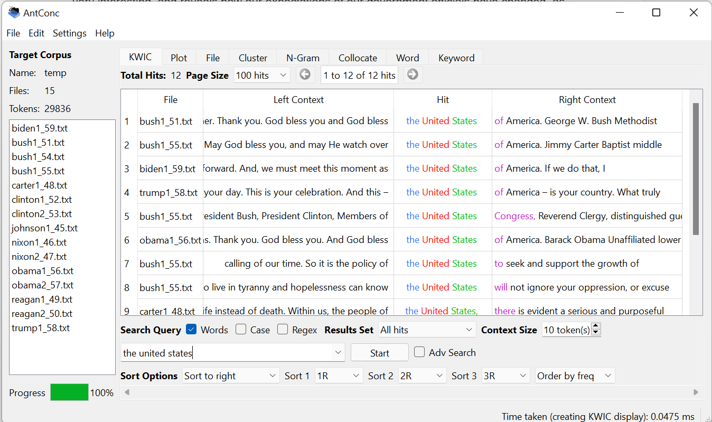

Corpus Analysis Assignment
For this assignment, I wanted to compare the first 10 presidential inauguration speeches versus the most recent 10 to discover how the older generations compared to more recent ones. However, I would like to note that I did not have access to either John Tyler’s speech (the 10th president), or Gerald Ford’s speech (the 38th president), so I decided to include the 11th oldest president (James Polk) as well as the 11th most recent president (Lyndon B. Johnson). If any of the presidents were elected for multiple terms, I also included their second inauguration speech in this analysis. In total, the first set of presidents include 16 speeches, and the most recent set includes 15.
To begin, I looked at the word count of both lists using Voyant. The first set of texts included 44,658 words, and the recent set included 29,742. The average amount of words per speech of the first set is 2,791, and the average for the second set is 1,983. I think even this very basic set of data is very interesting, and reveals how our expectations of our government officials have changed, as well as how we have evolved as a country as a whole. Writing was one of the main forms of communication back the the 1700s, and literacy was not something that everyone had. People in positions of power were expected to boast impressive writing skills. Words seem to have been more valued back in these times, and citizens of the U.S. were more willing to spend time listening to what their newly elected president had to say. As we approach more current times, people’s attention spans have shortened and less of us feel inclined to care or get involved in politics. The shorter and more concise speeches of the more recents presidents seems to represent this shift in mindset and behavior of the American people.
| Fig. 1, First Presidnets n-gram | Fig. 2, Recent Presidents n-gram |
|  |  |
Continuing on, I then chose to examine the difference in n-grams between the text sets using AntConc. First, I looked at 3 word n-grams. The top 3 words from the first set (as pictured above) is ‘the united states’ with a frequency of 67, and the top 3 from the recent set are ‘of the world’, with a frequency of 23. The relative frequencies for the first and most recent set are 0.0015 and 0.00077, respectively. I think the difference in these n-grams is interesting and can show what our country, and therefore our presidents, were focused on at the time of their speeches. Our country was brand new when we started to elect presidents, so it makes sense that ‘the united states’ is frequently used in these texts. America was still very focused on becoming its own nation apart from England and was more concerned with our own internal affairs. More recently, however, with advances in technology and communication, it has been easier than ever for countries to become involved in each other's affairs. Therefore, it makes sense that ‘of the world’ is used much more frequently in recent texts. The n-gram ‘the united states’, is also the 11th most frequent 3 word n-gram from the most recent presidential speeches, with a frequency of 12. In the first set of speeches, ‘of the world’ is featured 23 times. This overlap in both documents of each of these phrases is not surprising, as both are definitely concerned with things that presidents must say, but I think that the difference in frequency of each n-gram gives compelling data to show the differences between the first and most recent presidents.
| Fig. 3, First Presidnets KWIC | Fig. 4, Recent Presidents KWIC |
|  |  |
Next, I decided to analyze the KWIC for the n-gram ‘the united states’ as this was used more frequently throughout both sets of texts (pictured above). Based on the context present in the first set of presidential speeches, it appears the phrase is most commonly used when talking about current happenings in the U.S. at the time. Additionally, most of the top hits are from Monroe’s two inauguration addresses, which I find interesting that he was compelled to use that phrase so many times. Interestingly enough, in the later set of presidential addresses, the Bush’s speeches use that phrase more frequently than the rest. Also, the most recent speeches included references to God in several of the context phrases surrounding ‘the united states’, while the first set does not mention it in the top results. The differences in how each set of presidents use the n-gram ‘the united states’ are very apparent once you examine the context of the words.
In summation, examining these texts was quite interesting and the tools I used such as Voyant and AntConc proved quite useful in helping me do so. The words and phrases that were spoken in past presidential inauguration addresses versus now show how the times have changed since the first presidential election in 1732 and the most recent one in 2020.I think as a whole it is also representative of how the culture and linguistics of our country have changed as a whole. In the future, I would love to break the presidential inauguration addresses up into three or four groups and compare those to analyze these changes even further. But for now, I think doing a text analysis of just the first and last 10 speeches is adequate.